slide-03-dashboard-full.jpg
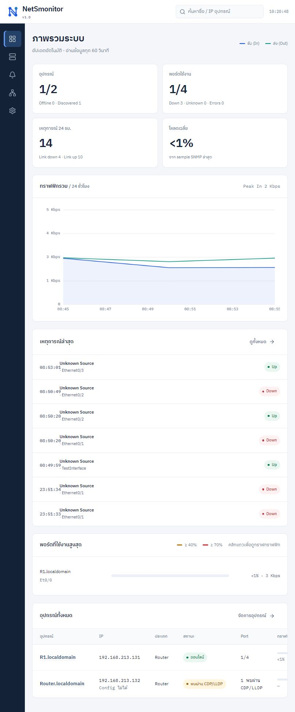
slide-03-dashboard.jpg
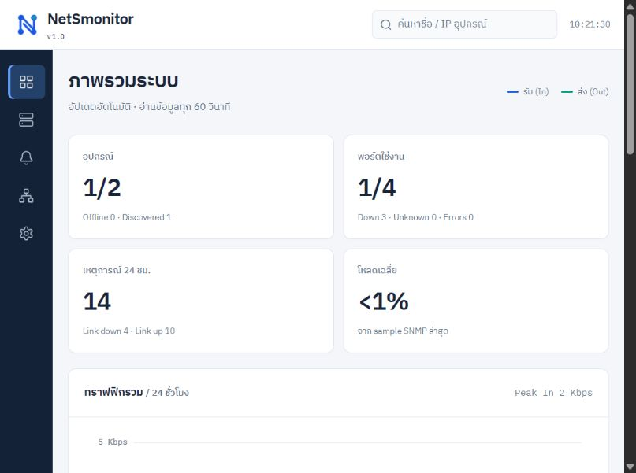
slide-04-add-device.jpg
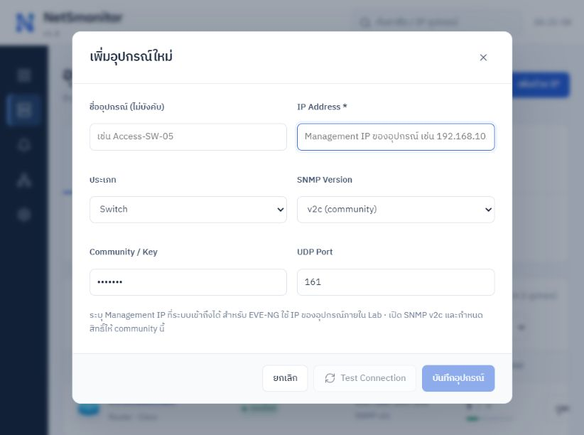
slide-04-devices.jpg
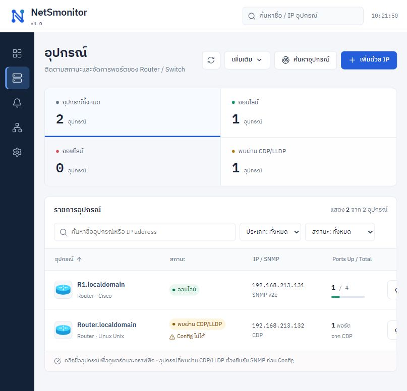
slide-05-device-detail.jpg
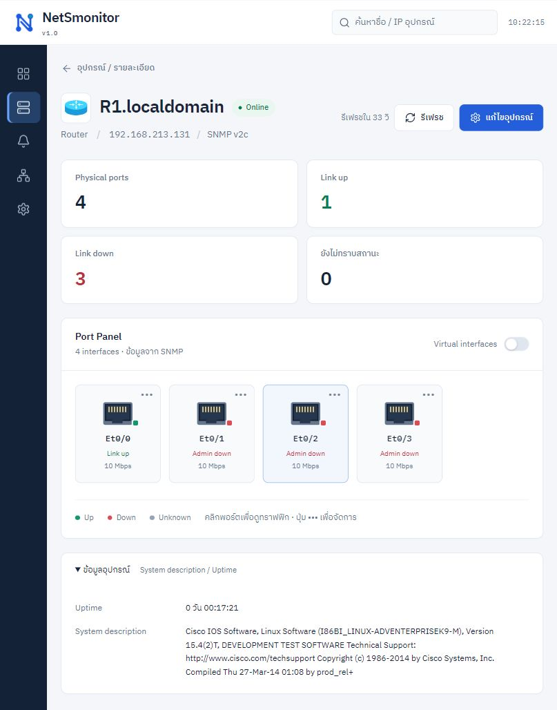
slide-05-port-panel.jpg
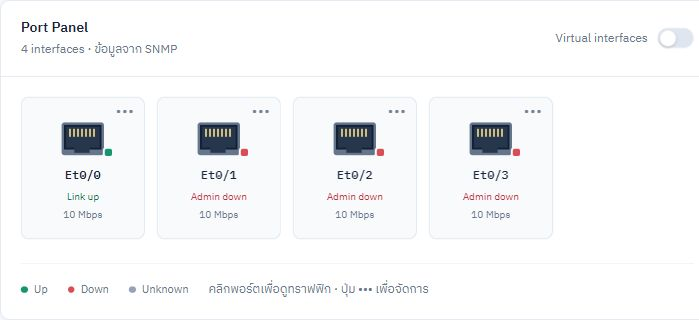
slide-06-port-control.jpg
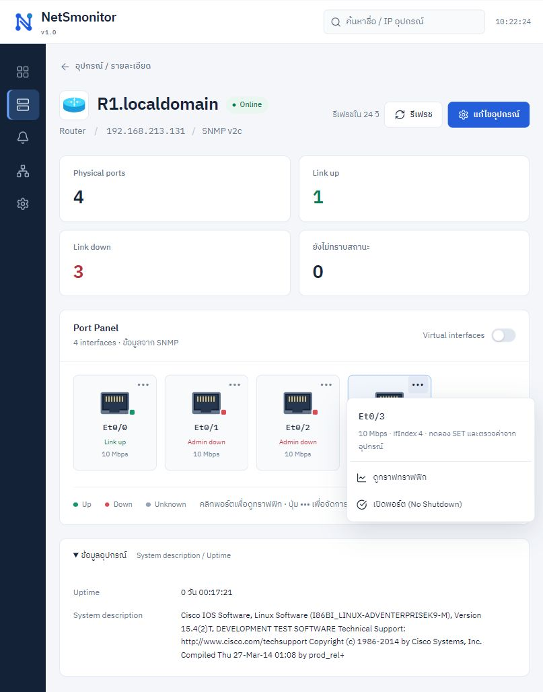
slide-06-port-menu.jpg
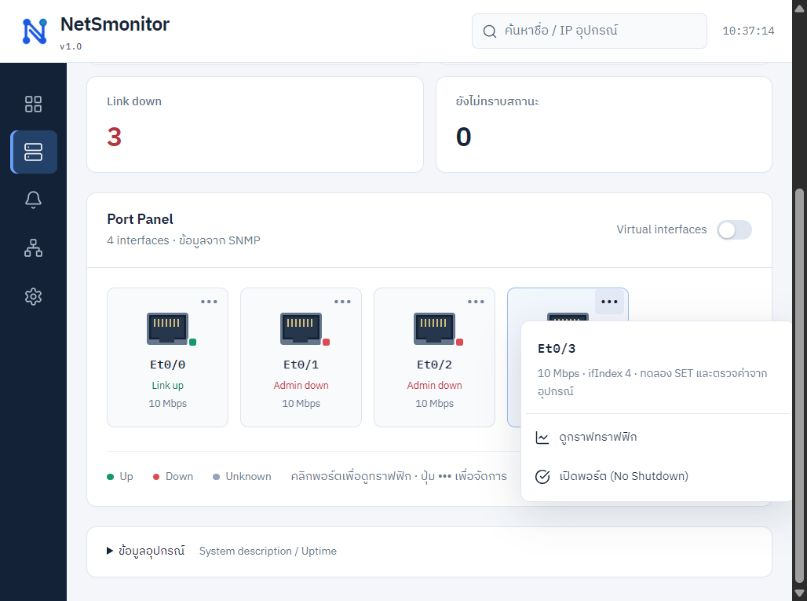
slide-07-traffic-live.jpg
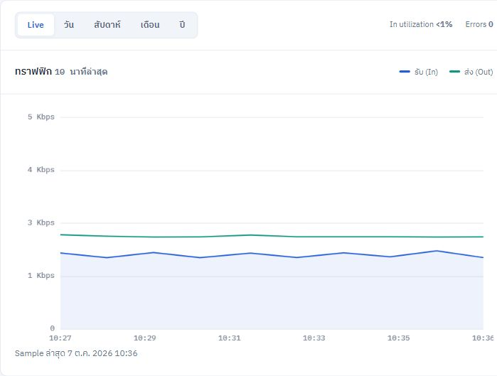
slide-07-traffic.jpg
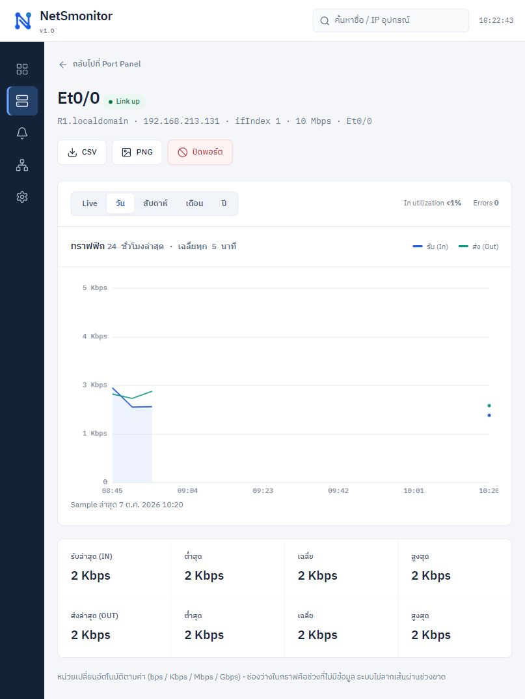
slide-08-traps-history.jpg
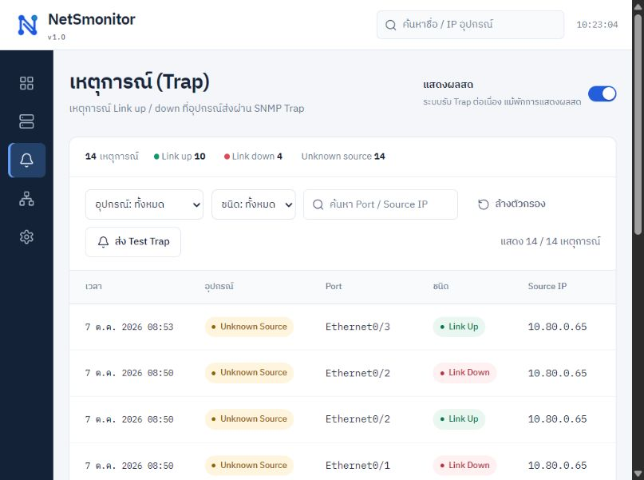
slide-09-discovery.jpg
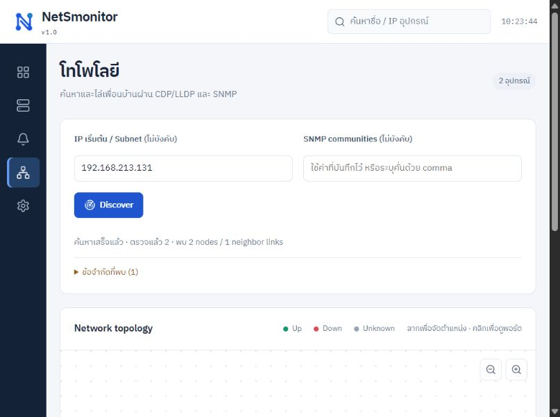
slide-10-topology-link.jpg
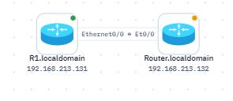
slide-10-topology-map.jpg
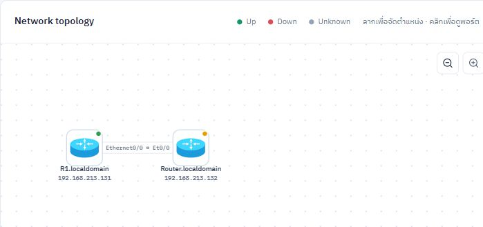
slide-10-topology.jpg
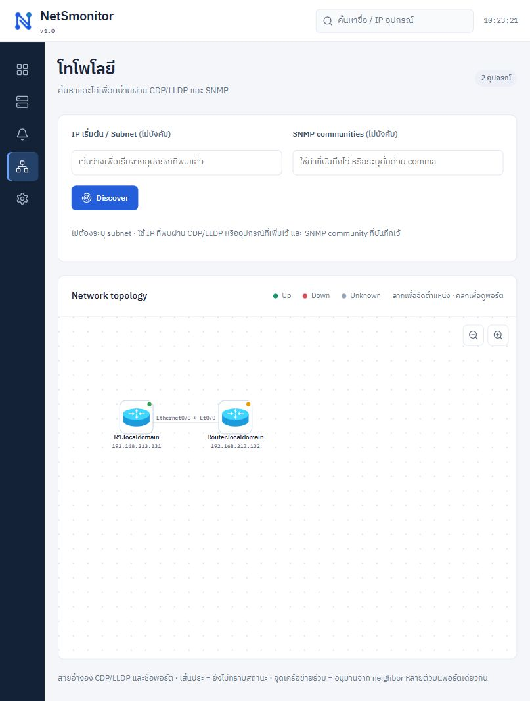
slide-11-polling-dialog.jpg
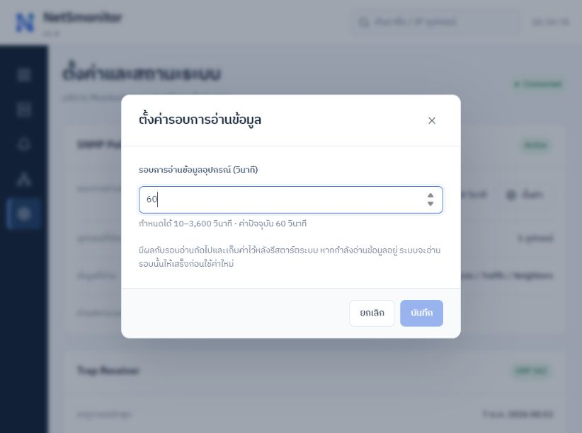
slide-11-settings-audit.jpg
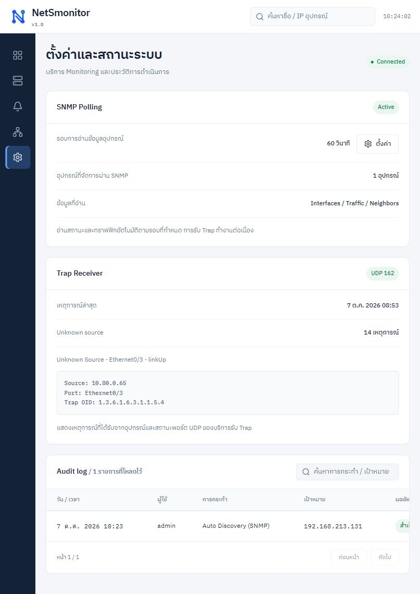